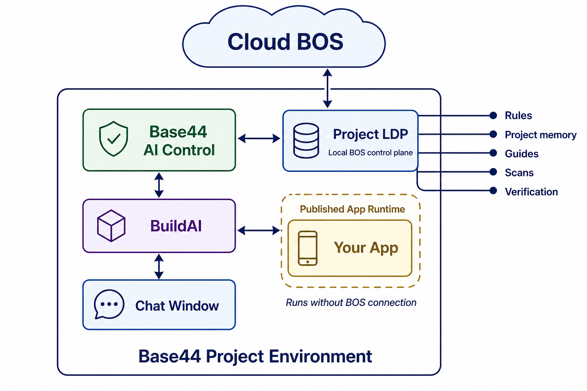
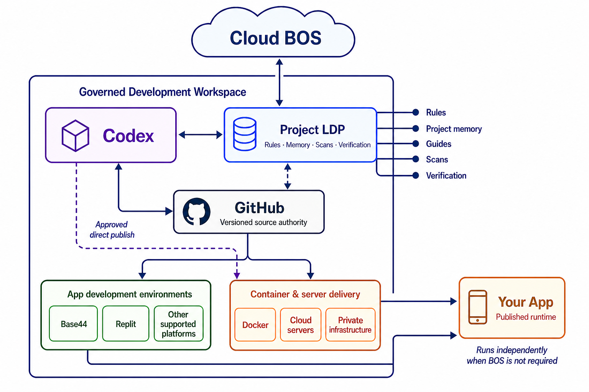

Control drift
Keep app purpose, state ownership, platform assumptions, and prior decisions visible across AI sessions.
A public-safe view of BOS outcomes: reduce drift, keep app memory visible, route work, scan focused risks, scope prompts, verify progress, support migration, hardening, and release readiness.
Use this page as a quick public overview of where BOS can help: planning, build control, scans, recovery, migration, hardening, and release preparation.
Keep app purpose, state ownership, platform assumptions, and prior decisions visible across AI sessions.
Route a request into planning, scan, fix, update, verify, recover, migrate, harden, or stop when authority is missing.
Use receipts and verification expectations to separate working fixes from confident but unproven claims.
The current Base44 development-mode contract is loading.

The Project LDP keeps rules, memory, scans and verification with the app. Cloud BOS coordination is optional; the published app remains independently operable.

Cloud BOS coordinates through the Project LDP and Codex. GitHub remains versioned source authority for delivery into supported builders or container and server infrastructure—not a direct Cloud BOS-to-runtime control path.
These summaries stay broad on purpose. They explain what a user can ask BOS to help with without exposing internal methods or project-private data.
If this page is opened directly from the filesystem, the generated public data may not load until it is served by the public site.
Plan inclusion, development-target compatibility and current maturity are separate. An installed BOS file does not prove a paid entitlement.
Selected Building Zone capabilities can be offered as controlled runtime pilots before they become fully supported. They are clearly labelled, require consent, include rollback and expiry controls, and may change or be withdrawn.
Available packs show an install command. Packs being prepared or explored show a discovery route instead. BOS never turns maturity evidence into an install without governed owner approval.